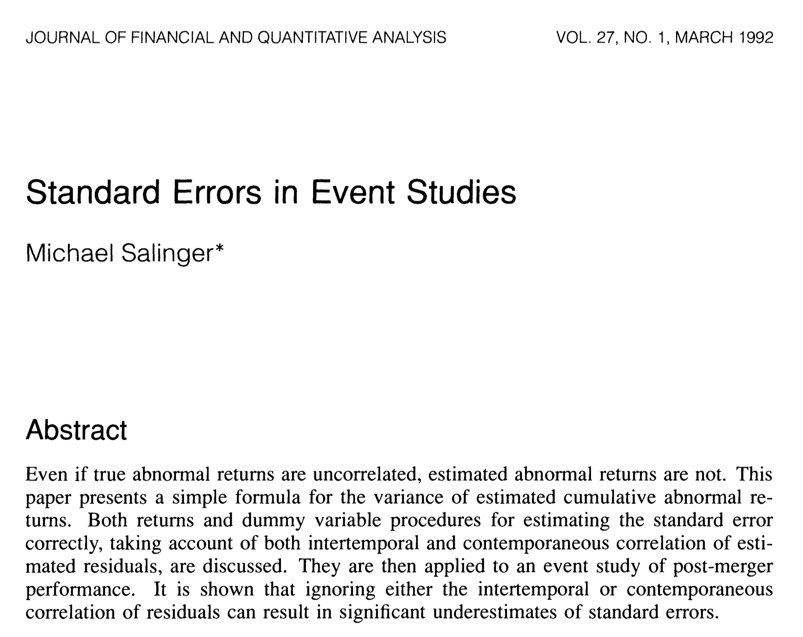

Regression Cumulative (Average) Abnormal Returns
I am working on a project estimating abnormal return event studies, and I am a little too pleased with how some coding was simplified by realizing it could be done as a regression. Note, I do not know all the citations for the intellectual history of these ideas.
Abnormal Returns
For those like me who have never taken a finance class, an abnormal return can be called the portion of a change in stock price not easily explained by ‘fundamentals.’ Let’s call the ‘fundamentals’ explanation the expected value, then the abnormal return (AR) is the deviation from that expectation:
\[ AR : a_{jt} = r_{jt} - \mathsf{E}[r_{jt} \mid X_t]. \]
If we assume a functional form for the expectation, then we know that we can estimate that residual. Let \(\mathsf{E}[r_{jt} \mid X_{t}] = \alpha_j + \beta_j X_{t} := m_{j}(X_t)\); that is, we let the expectation function of market-wide explanatory variables vary by firm. Clearly, we could estimate this firm-by-firm.
Cumulative Abnormal Returns
For some reason, a statistic that is more frequently used is the cumulative abnormal return (CAR):
\[ CAR : c^{s,t}_{j} = \sum_{s < t} a_{js}. \]
This can be estimated by summing the estimated firm abnormal returns.
Cumulative Average Abnormal Returns
Supposing we have a cross section of firms, \(j\in J\), then we can likewise estimate the average abnormal return (AAR) and the cumulative average abnormal return (CAAR):
\[ \begin{aligned} AAR : A_t &= \frac{1}{N_J} \sum_{j\in J} a_{jt} \\ CAAR : C^{s,t} &= \frac{1}{N_J} \sum_{j\in J} c^{s,t}_{j}. \end{aligned} \]
(Cumulative Average) Abnormal Return Event Studies
Suppose we think that there is an event that is (at some point) unexpected but that does not affect the expectation function, so the price effect of the event is only observed in the abnormal return. We could estimate the expectation function in a pre-period (or a training period to use machine learning vocabulary), and then forecast the function into an event period and take the residuals as estimates of the abnormal returns. By construction, the average of the training period estimated abnormal returns will be zero; however, the event period estimated abnormal returns would, under the assumptions, deviate from zero only if the event affected the price. We could plot the residuals in ‘event time’ to see if the residuals show deviations from zero near the event. Note, the event studies in in the DID / program evaluation literature are named after the finance event studies because of similarities with such a plot.
Statistical Testing of AR, CAR, AAR, CAAR
How do we know if the abnormal returns (and functions thereof) are statistically different from zero? There are two views about this: parametric vs non-parametric. Under the assumption that the abnormal returns have some distribution, the parametric side relies on the CLT to use Z-stats of functions of the random variables we are estimated. Under the same assumption about the stochastic nature of the abnormal returns but without relying on the CLT, one could use tests that use fewer assumptions about the distributions that lead to ‘sign’ and ‘rank’ tests.
In addition to the two views, we face the question are the abnormal returns completely independently drawn or is there some sort of correlation between the stock returns / abnormal returns. For the time being, I am going to ignore this… but I am actively interested in how to deal with this.
So, assuming you are willing to assume independence, the typical way to do statistical testing for these abnormal return variables is to the empirical distribution of the estimated variables; that is, we use the sample standard deviation. For the AR variable, we get:
\[ t(a_{jt}) := \frac{a_{jt}}{ \mathsf{sqrt}\left( ((t-s)+1 - df_{m})^{-1} \cdot \sum_{\tau\in \{s,t\}} a_{j\tau}^2 \right) } = \frac{a_{jt}}{s^{s,t}_{j}}, \]
where \(s^{s,t}_{j}\) is the degrees-of-freedom adjusted sample standard deviation. For example, if one uses the three factor Fama-French model for the expectations function, then \(df_m = 4\). Under CLT, \(t(a_{jt}) \sim \mathcal{N}(0,1)\).
For CAR, we get:
\[ t( c^{s,t}_{j} ) := \frac{ c^{s,t}_{j} }{ \mathsf{sqrt}\left( (t-s)\cdot ((t-s)+1 - df_{m})^{-1} \cdot \sum_{\tau\in \{s,t\}} a_{j\tau}^2 \right) } = \frac{c^{s,t}_{j}}{ \mathsf{sqrt}(t-s)\cdot s^{s,t}_{j}}. \]
For AAR, we get:
\[ t( A_{t} ) := \mathsf{sqrt}(\mathcal{N_{j}}) \frac{ A_{t} }{ \mathsf{sqrt}\left( (N_{J}-1)^{-1} \sum_{j\in J} (a_{jt}- A_t)^2 \right) } = \frac{A_{t}}{ S^A_{t}}. \]
For CAAR, we get:
\[ t( C^{s,t} ) := \mathsf{sqrt}(\mathcal{N_{j}}) \frac{ C^{s,t} }{ \mathsf{sqrt}\left( (N_{J}-1)^{-1} \sum_{j\in J} (c^{s,t}_{j}- C^{s,t})^2 \right) } = \frac{ C^{s,t} }{ S^C_{t}}. \]
Estimating AR, CAR, AAR, CAAR via regression
First impression is that one needs to 1) estimate \(N_J\) OLS regressions, 2) forecast the residuals, 3) take functions of the residuals, and 4) calculate some annoying t-stats. But it turns out that regression can do this!
Event Time
Let \(\tau \in \mathcal{T}\) index event time, so that \(\tau=0\) denotes the event. Let \(\mathcal{T} = \{\mathcal{Y},\mathcal{Z}\}\), where \(\mathcal{Y}\) is the training period and \(\mathcal{Z}\) is the event period.
Two Sets of Dummy Variables
First, define \(D_{s} = 1[\tau=s]\), which is a standard dummy variable for event time periods. Second, define \(Q_{s} = 1[\tau=s] - 1[\tau=(s+1)]\), which is a quasi-dummy variable that takes the value of \(1\) when \(s=\tau\) and \(-1\) when \(s=\tau +1\). Note, for \(\tau\in \mathcal{Z}\), the ‘last’ \(Q\)-dummy is for period \(\tau=Z_1\), such that there is no \((\tau+1)th\) period.
Parameterize expectation function
Let \(m_j(X_t) = \beta_{j,0} + f^1_t\beta_{j,1} + f^2_t\beta_{j,2} + f^3_t\beta_{j,3}\) be three variables (and the constant) for the expectation model.
Regression for AR
Run the following regression for each firm:
\[ r_{jt} = \beta_{j,0} + f^1_t\beta_{j,1} + f^2_t\beta_{j,2} + f^3_t\beta_{j,3} + \sum_{\tau \in \mathcal{Z}} D_{\tau}\pi_{j,\tau} + u_{jt}, \]
where \(\pi_{j,\tau} = a_{jt}\).
Stata
Let the training period be \(\tau \in [Y_0,Y_1]\) and the event period be \(\tau \in [Z_0,Z_1]\).
reg rj f* D* if firm==j & ( inrange(et,Y0,Y1) | inrange(et,Z0,Z1) )Regression for CAR
Run the following regression for each firm:
\[ r_{jt} = \beta_{j,0} + f^1_t\beta_{j,1} + f^2_t\beta_{j,2} + f^3_t\beta_{j,3} + \sum_{\tau \in \mathcal{Z}} Q_{\tau}\gamma_{j,\tau} + u_{jt}, \]
where \(\gamma_{j,\tau} = c^{Z_0,Z_1}_{j}\).
Stata
Let the training period be \(\tau \in [Y_0,Y_1]\) and the event period be \(\tau \in [Z_0,Z_1]\).
reg rj f* Q* if firm==j & ( inrange(et,Y0,Y1) | inrange(et,Z0,Z1) )Regressions for AAR and CAAR
To get the AAR and CAAR variables, one ‘stacks’ the firm data, then implements the same regressions as above.
Stata
Let the training period be \(\tau \in [Y_0,Y_1]\) and the event period be \(\tau \in [Z_0,Z_1]\). Let \(G\) be an categorical (factor) variable for firms. Note, we are still letting the expectation function be firm-specific, but are forcing the variables on the dummies to be equal across firms, which has the effect of calculating the AAR and CAAR.
* AAR
reghdfe rj D* if ( inrange(et,Y0,Y1) | inrange(et,Z0,Z1) ), absorb(i.G##c.(f*)) vce(cluster G)
* CAAR
reghdfe rj Q* if ( inrange(et,Y0,Y1) | inrange(et,Z0,Z1) ), absorb(i.G##c.(f*)) vce(cluster G)Standard Errors
It turns out that the standard errors from the regressions are correct for the parameters. Salinger (1992) discusses this.
